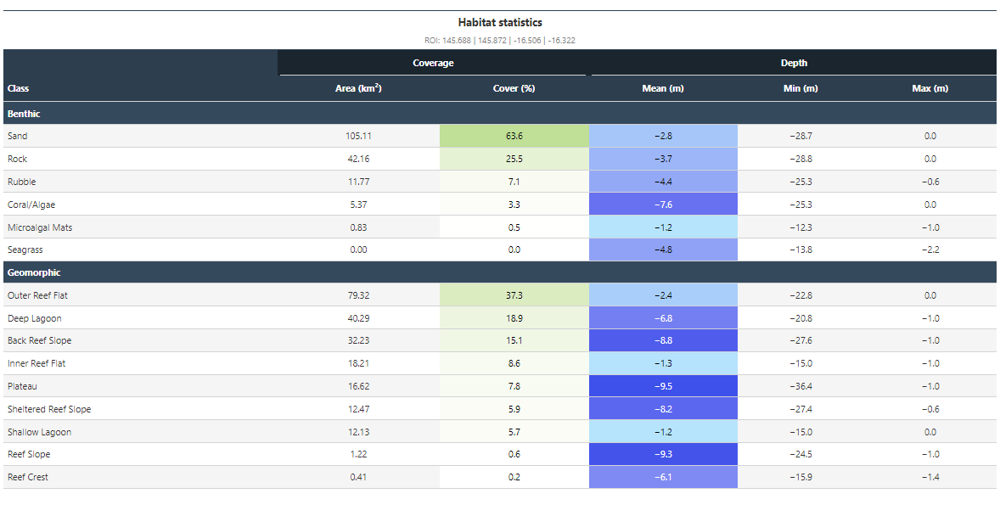
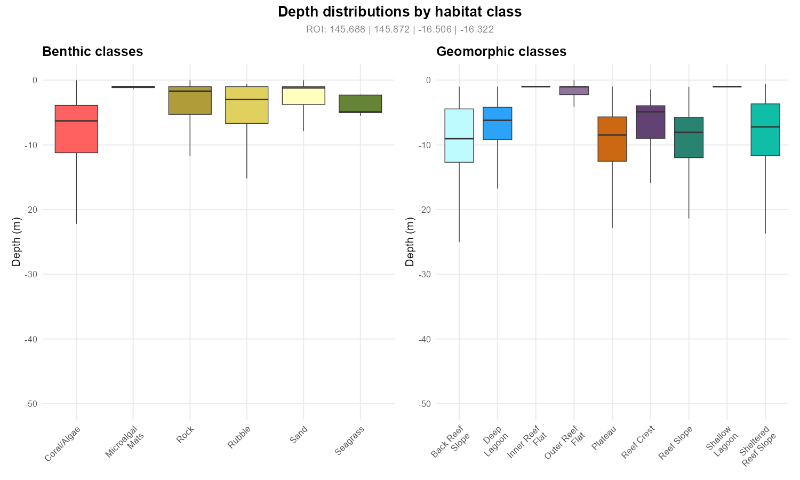
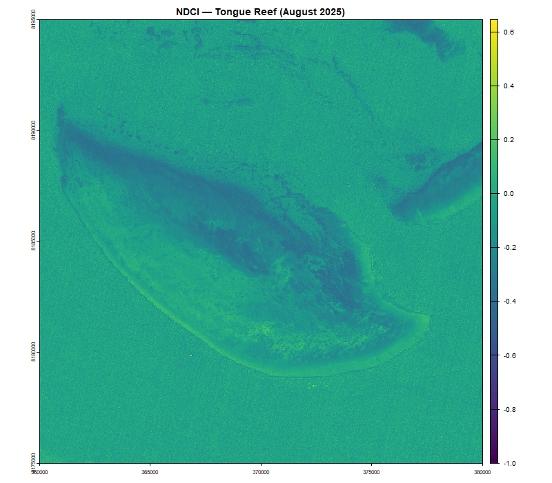
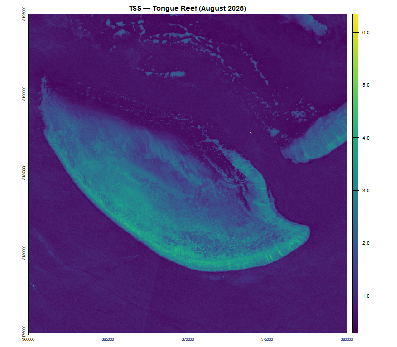
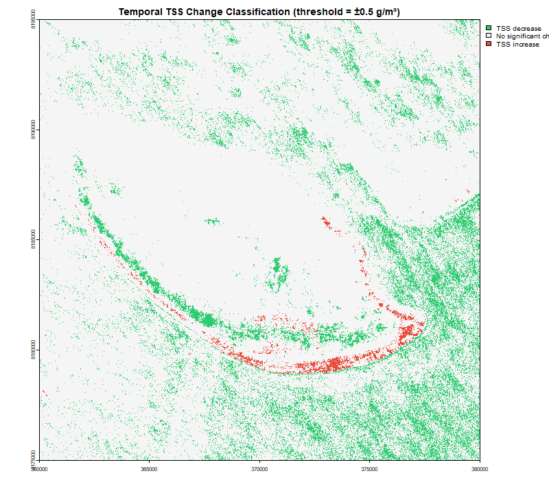

Overview
ReefMappeR is an R package for mapping and analysing reef habitats at the Great Barrier Reef (GBR) using satellite remote sensing and open marine datasets. It integrates four data sources into a single, reproducible workflow:
- GEBCO 2024 bathymetry — global seafloor depth model at ~450 m resolution
- Allen Coral Atlas — high-resolution (5 m) benthic habitat and geomorphic zone maps derived from PlanetScope satellite imagery and machine learning
- UNEP-WCMC seagrass polygons — global seagrass distribution database
- Sentinel-2 Level-2A satellite imagery — multispectral imagery at 10 m resolution for water quality analysis
The package is designed for researchers and students who want to rapidly characterise reef habitats, assess water quality, and detect temporal change without manual data processing.
Why Sentinel-2?
Sentinel-2 is a European Space Agency (ESA) satellite mission providing free, open-access multispectral imagery at 10 m spatial resolution with a revisit time of approximately 5 days. For reef monitoring it offers several advantages:
- 10 m resolution — sufficient to delineate benthic features and reef structures
- Red-edge band (B5, 705 nm) — sensitive to chlorophyll-a concentration, enabling NDCI calculation
- Free and open access — available via Copernicus Open Access Hub
- Level-2A products — atmospherically corrected surface reflectance, ready for water quality analysis
In this vignette we use two Sentinel-2 Level-2A images of Tongue Reef, GBR, acquired in summer 2024 and summer 2025.
Example Data
ReefMappeR ships with the following bundled datasets for the Great Barrier Reef:
| Dataset | File | Source |
|---|---|---|
| Bathymetry | bathymetry_gbr.tif |
GEBCO 2024 |
| Benthic habitat tiles | benthic_gbr_*.tif |
Allen Coral Atlas |
| Geomorphic zone tiles | geomorph_gbr_*.tif |
Allen Coral Atlas |
| Seagrass polygons | seagrass_gbr.shp |
UNEP-WCMC |
| Sentinel-2 (August 2025) | Sentinel2_example.tif |
Copernicus |
| Sentinel-2 (Summer 2024) | Sentinel2_2024_example.tif |
Copernicus |
The benthic and geomorphic data are stored as individual tiles
covering the GBR. set_roi() automatically identifies and
loads only the tiles that overlap with your region of interest — no
manual tile selection required.
Workflow
set_roi()
├── plot_habitat_map()
├── habitat_summary()
├── plot_depth_distribution()
├── calculate_water_quality() ──► assess_reef_change() ──► compare_tss_change()
└── calc_ndci() ──► assess_reef_change() ──► compare_ndci_change()1. Define a Region of Interest
set_roi() loads and crops all bundled datasets to your
area of interest. It accepts either a bounding box or a Sentinel-2 image
as input. When a Sentinel-2 image is provided, the spatial extent is
automatically extracted and used to identify overlapping benthic and
geomorphic tiles.
s2 <- terra::rast(system.file("extdata", "Sentinel2_example.tif",
package = "ReefMappeR"))
result <- set_roi(s2 = s2)The result is a named list with four elements:
-
result$bathymetry— GEBCO bathymetry resampled to the ACA grid (~10 m) -
result$benthic— mosaicked benthic habitat classes -
result$geomorph— mosaicked geomorphic zone classes -
result$seagrass— seagrass polygons clipped to the ROI
2. Visualise Habitat Maps
plot_habitat_map() produces a two-panel map with
bathymetry as background. The left panel shows benthic habitat classes,
the right panel geomorphic zones, both following the Allen Coral Atlas colour
scheme. Seagrass polygons from UNEP-WCMC are overlaid in green on
both panels.
plot_habitat_map(result)
Allen Coral Atlas benthic classes: Sand, Rubble, Rock, Seagrass, Coral/Algae, Microalgal Mats. Full class descriptions and colour scheme: allencoralatlas.org/methods
Allen Coral Atlas geomorphic zones: Shallow Lagoon, Deep Lagoon, Inner Reef Flat, Outer Reef Flat, Reef Crest, Terrestrial Reef Flat, Sheltered Reef Slope, Reef Slope, Plateau, Back Reef Slope, Patch Reef.
3. Summarise Habitat Statistics
habitat_summary() computes per-class area (km²),
percentage cover, and depth statistics (mean, min, max) for all benthic
and geomorphic classes within the ROI. Results are presented as a styled
summary table.
out <- habitat_summary(result)
out$table # styled summary table
out$stats$benthic # raw benthic statistics as data frame
out$stats$geomorph # raw geomorphic statistics as data frame
4. Visualise Depth Distributions
plot_depth_distribution() shows the depth range of each
habitat class as boxplots, derived by intersecting the habitat rasters
with the GEBCO bathymetry layer. This reveals the ecological zonation of
reef habitats — for example, at what depths coral and algae occur
compared to sand or rubble.
plot_depth_distribution(result)
5. Water Quality from Sentinel-2
Chlorophyll-a (NDCI)
calc_ndci() computes the Normalized Difference
Chlorophyll Index (NDCI) from Sentinel-2 bands B4 (665 nm, red) and B5
(705 nm, red-edge). NDCI is a proxy for chlorophyll-a concentration —
the primary photosynthetic pigment in phytoplankton and algae. Elevated
chlorophyll-a over reefs can indicate eutrophication from terrestrial
runoff, a significant threat to coral reef ecosystems (Mishra &
Mishra, 2012).
NDCI values range from -1 to +1:
- < 0: low chlorophyll-a, clear oligotrophic water
- 0–0.3: moderate chlorophyll-a, typical coastal conditions
- > 0.3: high chlorophyll-a, potential eutrophication or algal bloom
s2 <- terra::rast(system.file("extdata", "Sentinel2_example.tif",
package = "ReefMappeR"))
ndci <- calc_ndci(s2)
Total Suspended Sediments (TSS)
calculate_water_quality() estimates Total Suspended
Sediments (TSS) in g/m³ from Sentinel-2 bands B3 (green), B4 (red), and
B8 (NIR). TSS is a key indicator of water turbidity — high sediment
loads reduce light availability for corals and seagrass and can cause
physical smothering of reef communities.
tss <- calculate_water_quality(s2)
6. Detect Temporal Change
NDCI Change (2024–2025)
assess_reef_change() computes the pixel-wise difference
between two rasters (t2 minus t1). Applied to NDCI, positive values
indicate increased chlorophyll-a between the two dates — potentially
reflecting worsening water quality or increased algal growth. Negative
values indicate improved water clarity.
compare_ndci_change() classifies the change into three
categories using a user-defined threshold (default ±0.1):
s2_24 <- terra::rast(system.file("extdata", "Sentinel2_2024_example.tif",
package = "ReefMappeR"))
s2_25 <- terra::rast(system.file("extdata", "Sentinel2_example.tif",
package = "ReefMappeR"))
ndci_24 <- calc_ndci(s2_24)
ndci_25 <- calc_ndci(s2_25)
change_ndci <- assess_reef_change(ndci_24, ndci_25)
compare_ndci_change(change_ndci)
TSS Change (2024–2025)
Applied to TSS, assess_reef_change() reveals changes in
suspended sediment load. Increased TSS may reflect storm events,
dredging activity, or intensified terrestrial runoff.
compare_tss_change() classifies the change using a
threshold of ±0.5 g/m³ by default.
tss_24 <- calculate_water_quality(s2_24)
tss_25 <- calculate_water_quality(s2_25)
change_tss <- assess_reef_change(tss_24, tss_25)
compare_tss_change(change_tss)
References
Allen Coral Atlas (2020). Coral reefs of the world. https://allencoralatlas.org
Lyons, M.B. et al. (2020). Mapping the world’s coral reefs using a global multiscale earth observation framework. Remote Sensing in Ecology and Conservation, 6(4), 557–568. https://doi.org/10.1002/rse2.157
Mishra, S. & Mishra, D.R. (2012). Normalized difference chlorophyll index: A novel model for remote sensing of chlorophyll-a concentration in turbid productive waters. Remote Sensing of Environment, 117, 394–406. https://doi.org/10.1016/j.rse.2011.10.016
GEBCO Compilation Group (2024). GEBCO 2024 Grid. https://doi.org/10.5285/1c44ce99-0a0d-5f4f-e063-7086abc0ea0f
UNEP-WCMC & Short, F.T. (2021). Global distribution of seagrasses (version 7.1). https://doi.org/10.34892/x6r3-d211